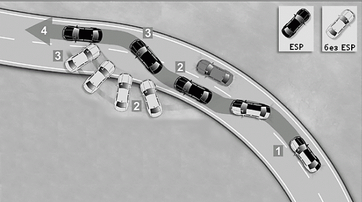

Тормоза
Совет № 27 Прерывистое торможение может сократить тормозной путь на 3–4 метра
На сухой ровной площадке (желательно, чтобы площадка была закрытой) разгоните автомобиль до 50 км/ч. Затем резко, но не в пол, а «коротко» нажмите на педаль тормоза, затем опять резко отпустите педаль тормоза и сразу также нажмите и также отпустите. Так нужно повторять до полной остановки автомобиля. Такой вид торможения называется прерывистым.
Сначала до полной остановки у вас будет получаться нажать педаль тормоза 4–5 раз. Что делать дальше? Тренироваться, тренироваться и еще раз тренироваться. Хороший результат – это 10–15 нажатий на педаль тормоза до полной остановки. Освоив этот прием, вы сократите свой тормозной путь на 3–4 метра. А это значительно!
Прерывистое торможение полезно еще тем, что водитель движущегося сзади автомобиля быстрее заметит начало торможения, особенно в солнечный день, когда солнце бьет по глазам и можно не заметить начало торможения, или ночью, когда горят габариты и тоже можно от усталости не заметить еще одну загоревшуюся секцию на задних фонарях.
Совет № 28 Ступенчатое торможение является наиболее эффективным, оно позволяет сократить тормозной путь на 5–6 метров по сравнению с торможением юзомДлина тормозного пути зависит не только от тормозной системы, но и от техники торможения. Самая эффективная – техника ступенчатого торможения. Чтобы ее освоить, нужно научиться чувствовать момент, когда колеса готовы сорваться в скольжение. Не допуская блокировки колес, нужно немного приотпустить педаль тормоза и сразу же на нее нажать, но с большим усилием. Нужно опять почти допустить блокировку колес и повторить все сначала, каждый раз нужно нажимать тормоз с большим усилием. В этом и заключается техника ступенчатого торможения.
Освоить технику ступенчатого торможения сложно. На это уйдет несколько месяцев непрерывных тренировок, но зато потом смело можете отключать ABS – она вам больше не нужна. Ваши ноги будут работать лучше, чем любая ABS, а тормозной путь сократится на 5–6 метров. Только не забывайте следить за состоянием колодок и посматривать в зеркало заднего вида.
Совет № 29 Иногда на переднеприводной машине, чтобы правильно войти в поворот, нужно нагрузить переднюю ось. Для этого нужно научиться тормозить левой ногой, не снимая правую с педали газаПомните: эта техника применима только к переднеприводным машинам. Ее нужно применять при прохождении крутых поворотов, в том случае, если машина не вписывается в поворот. Чтобы выполнить маневр, не сбрасывая газа, немного притормозите левой ногой. Заднюю ось начнет слегка заносить к внешней стороне поворота. Не нужно бояться. После этого добавьте газу – машинка выровняется и выйдет из заноса.
Тренируйтесь только на закрытой площадке, иначе можно запросто попасть в аварию.
Если левой ногой вам тормозить неудобно, можно воспользоваться ручником – эффект будет тот же, а именно: заднюю ось начнет заносить на внешнюю сторону поворота. Но ручной тормоз довольно опасен. Кнопка фиксатора в нем частенько западает, и его не всегда получается быстро отпустить.
А вообще лучше не превышать скорость в повороте – ее нужно рассчитывать еще до самого поворота, чтобы все прошло гладко.
Совет № 30 Новую машину смело ставьте на ручник. Если колодки ручника изношены, придется ставить машину на передачу. При этом возьмите в привычку перед запуском двигателя нажимать две педали – сцепление и тормоз. Автомобили с автоматической коробкой передач можно смело оставлять в положении Р В холода машину лучше ставить на передачу!Вы оставляете машину на парковке. Что лучше: поставить ее на ручник или на передачу? Это извечный вопрос, который мучает многих водителей. Каждый водитель для себя находит аргументы в пользу того или иного способа «закрепления» автомобиля в пространстве.
Вообще-то говоря, ручник называют парковочным тормозом. Исходя из названия, машину при парковке принято «ставить на ручник». Когда автомобиль новый – нет проблем. Поставили на ручник и ушли спокойно. Он никуда не укатится. Но что, если колодки ручника уже изношены или попросту растянулся трос ручника?
В этом случае лучше поставить автомобиль на передачу. Но и тут есть свои недостатки. Во-первых, если привод газораспределительного механизма (ГРМ) приводится в действие ремнем, а не цепью, следствием постановки автомобиля на передачу будет изнашивание роликов ремня ГРМ. Если ГРМ приводится в действие цепью, можете ставить машину на передачу. Во-вторых, вы можете забыть, что автомобиль установлен на передачу, и запустить двигатель, не выжав сцепление. В результате автомобиль «прыгнет». Хорошо, если впереди не стоит другой автомобиль! Поэтому некоторые автомобили не запускаются до тех пор, пока вы не выжмете сцепление. В-третьих, если кто-то въедет в ваш автомобиль (спереди или сзади), пока он стоит на передаче, это может существенно повредить коробку переключения передач.
Понятно, что если колодки ручника изношены, то другого выбора у вас нет, и придется таки ставить машину на передачу. Но при этом возьмите в привычку перед запуском двигателя нажимать две педали – сцепление и тормоз. Когда вы выжимаете сцепление, машину уже ничто не держит (ведь на ручник вы ее не поставили), поэтому нужно нажать тормоз, чтобы машина никуда не укатилась, а только после этого запускать двигатель.
Автомобили с автоматической коробкой передач можно смело оставлять в положении Р – ничего страшного с ними не случится. Но если автомобиль нужно поставить под крутым склоном, то лучше еще и затянуть ручник, если им оснащен ваш автомобиль.
Во избежание обледенения колодок ручника и их прилипания к тормозным дискам зимой (или в заморозки) машину лучше ставить на передачу!
Совет № 31 При парковке на спуске после фиксации автомобиля выверните руль вправо. Далеко он не уедет!Иногда нужно припарковать автомобиль на крутом спуске. В этом случае нужно выполнить следующие действия.
• Затянуть ручник – это само собой.
• Поставить автомобиль на передачу – это на случай, если ручник не выдержит. Можно ставить автомобиль на первую или заднюю передачу: на заднюю передачу лучше ставить, если есть риск, что машина укатится вперед, а на переднюю – если есть риск скатывания назад.
• Вывернете руль вправо – в этом случае, даже если автомобиль покатится, далеко он не уедет.
Совет № 32 Иногда, для того чтобы вернуть эффективность ручнику, достаточно просто подтянуть трос ручного тормозаКолодки ручника практически неубиваемые, если, конечно, вы не привыкли ездить с затянутым ручником!
Когда ручник «плохо держит», на СТО частенько предлагают сменить колодки ручника. Хотя иногда помогает просто подтянуть трос ручника! После этого ручник начинает работать так же, как и в молодости, а вас это спасает от ненужных трат.
Сам трос ручника меняется в глубокой старости автомобиля. Если ваш автомобиль еще не прошел и 200 тысяч километров, тогда глубоко сомневаюсь, что вам нужно менять трос. Конечно, все сказанное не относится к отечественным и китайским автомобилям, где ручник может быть неисправен сразу после выхода с конвейера.
Совет № 33 Чтобы устранить скрипы и писки тормозов, достаточно бывает просто их смазать специальными смазкамиУ вас прекрасная иномарка, но тормоза скрипят, как на дедушкиных «жигулях». Возможно, колодки новые и еще не притерлись к диску или же вам попались такие колодки – со специфическим сплавом. Менять не хочется, но раздражает. Что делать? Возможно, колодки попискивают из-за немного подклинившего тормозного суппорта, который нужно смазать.
Можно попытаться смазать тормоза специальными антизадирными смазками. Обзор средств для смазки тормозов можно найти по адресу:
http://in-drive.ru/3633-obzor-sredstv-dlja-smazki-tormozov.html
Если читать статью времени нет, помните, что тормозные механизмы ни в коем случае нельзя смазывать смазками типа нигрол, «Литол-24» или «графитки». Это может стать причиной аварии!
Совет № 34 Если вы видите яму или другое препятствие (например, «лежачего полицейского»), то постарайтесь притормозить перед препятствием, а когда будете пересекать само препятствие, отпустите педаль тормоза!Пересекая ямы при нажатой педали тормоза, помните, удар по ходовой части автомобиля в несколько раз сильнее, чем при движении накатом.
Совет № 35 Блок управления ABS «заточен» под определенный тип покрышек, обычно под конкретного производителя и под корректный размер. Устанавливая шины другого производителя в целях экономии, не забудьте внести изменения в электронный блок управления ABS. Помните, ABS не панацея! На дороге с неоднородным покрытием, а также зимой ABS может увеличить тормозной путь, поскольку она не допускает пробуксовкиАнтиблокировочная система тормозов (ABS) в течение последних 20 лет получила широкое распространение. Сначала она устанавливалась лишь на самые дорогие машины, потом на машины среднего ценового диапазона, а сейчас практически стала частью тормозной системы, ею оснащают практически все современные автомобили.
Разберемся, для чего она нужна. Предположим, что на дорогу внезапно выбежала собака (или другое животное). Реакция среднестатистического водителя будет такой: тормоз в пол. В результате колеса блокируются и вообще перестают тормозить – машина двигается как трамвай на рельсах. Эффективность такого торможения снижается практически до нуля.
Система ABS предназначена для предотвращения блокировки колес и вмешивается в торможение только в экстренных случаях. Если ваш автомобиль оснащен ABS, попробуйте немного разогнаться (до 30 км/ч – этого хватит) и утоптать педаль тормоза в пол – вы почувствуете легкое биение в ногу – это работает ABS.
АВS понижает давление в тормозной системе, снимается блокировка, скольжение колеса прекращается, и начинается замедление автомобиля. После этого все повторяется заново – опять, когда нужно, понижается давление, предотвращается блокировка колеса.
Сама ABS состоит из блока управления, электронасоса, блока электромагнитных клапанов и датчиков вращения колес. За этими датчиками нужно постоянно следить. Если один из датчиков вышел из строя, ABS работать не будет. Датчики ABS установлены на каждом колесе (их еще называют датчиками скорости). На дешевых версиях АВS устанавливают всего два датчика. Обычно такие датчики довольно надежны и нечасто выходят из строя, но если ломаются, то стоят недешево, в зависимости от автомобиля – от 50 до 200 долларов. Практически у всех автомобилей есть на доске приборов контрольная лампа ABS. Она, как правило, загорается при включении зажигания и гаснет после запуска двигателя. Эта лампа, в зависимости от конструкции автомобилей и алгоритмов электронных блоков управления, может мерцать в моменты срабатывания ABS. Если же лампа ABS продолжает гореть после запуска двигателя, то это повод обратиться на СТО. Причина? Причин довольно много. Может, просто в результате замены АКБ «сбилась» программа работы ABS и нужно заново настроить компьютер – как правило, такое бывает на дорогих машинах. Если же машина у вас не такая ультрасовременная, то причиной неисправности ABS может быть выход из строя одного из датчиков. Думаете, 50-200 долларов – это дорого? Это копейки по сравнению с ценой самого блока ABS! Он может стоить несколько тысяч долларов. Кстати, данные блоки иногда ремонтируются. Ремонт стоит в пределах 100–300 долларов, но гарантий никаких нет. Можно попытаться найти б/у блок на разборке. Но вам очень повезет, если вы найдете именно то, что вам нужно. Бывает так, что блок ABS сняли точно с такой же машины (например, с BMW), модель даже такая (например, 520), а он отказывается работать в вашей машине! Если б/у блок в вашей машине заработал, можете радоваться. Считайте, что вы сэкономили минимум 700 долларов (б/у блок стоит в пределах 150–300 долларов).
Но ABS тоже не панацея. И вот почему.
• Блок управления ABS «заточен» под определенный тип покрышек, обычно под конкретного производителя и под корректный размер. Часто устанавливают шины другого производителя (после того как родные укатаны) в целях экономии. А иногда, наоборот, устанавливают шины большего размера, чем предписано в настройках ABS, а прошить электронный блок управления забывают (иногда это стоит дороже, чем новый комплект нестандартных шин). Выходит, что ABS может работать некорректно.
• На дороге с неоднородным покрытием, например под одним колесом может быть асфальт, а под другим – снег или лед, ABS может увеличить тормозной путь, поскольку она не допускает пробуксовки.
• Еще ABS отключается при скорости меньше 10 км/ч. Об этом не все знают, поэтому думают, что она сработает, а этого не происходит. Поэтому можно попасть в незначительную аварию, понадеявшись на ABS.
• Зимой вообще нужно быть очень внимательным, поскольку ABS увеличивает, а не уменьшает тормозной путь. Заблокированные колеса сгребают перед собой снег, уменьшая тормозной путь, a ABS предотвращает блокировку, и в результате этого колеса переезжают снег. Из-за этого тормозной путь увеличивается.
ABS уже давно нельзя назвать шедевром инженерной мысли. Практически все современные автомобили оснащены ABS. Поэтому сегодня ABS – это не дополнительное оборудование, а базовое. В качестве дополнительного оборудования производители авто предлагают другие системы, позволяющие сократить тормозной путь. Одной из таких систем является В AS {Break Assist System). Разберемся, как она работает. Если водитель в панике не нажал педаль тормоза достаточно сильно для срабатывания ABS, то тормозной путь будет намного больше – ведь ABS не сработала, да и педаль тормоза нажата не до конца. BAS снижает на 40 % порог чувствительности педали тормоза, то есть, если нажать педаль тормоза почти на половину слабее, ABS активируется. Кроме того, BAS адаптируется к манере вождения.
Понятно, что BAS устанавливается на машинах с ABS, без нее она теряет смысл. Но BAS обычно входит в дополнительное оборудование, хотя иногда является частью ABS.
Кроме BAS на некоторых автомобилях используется электронная система управления тормозами – SBC (Sensotronic Brake Control). Это не педаль в прямом смысле этого слова, а кнопка компьютера, как в Need For Speed. Когда вы нажимаете «кнопку тормоза», компьютер получает команду – нужно тормозить. Он вычисляет интенсивность нажатия этой кнопки, по ней вычисляет интенсивность торможения. Кроме этого учитывается информация от многочисленных датчиков. Оценивается даже скорость переноса ноги с педали акселератора на педаль тормоза, не говоря уже о силе нажатия педали тормоза, скорости автомобиля, его загруженности и дорожного покрытия. На основании всей этой информации принимается решение о силе торможения, причем сила торможения вычисляется отдельно для каждого колеса. Умная электроника также заботится о плавности торможения, что позволяет останавливать автомобиль без «клевков».
Совет № 36 Используйте технику прерывистого торможения, если на вашей машине установлена ABSВ предыдущем совете мы рассмотрели почти все, что вам нужно знать об ABS. Из ее принципов работы вытекают следующие следствия:
• ABS увеличивает тормозной путь. Если вы умеете правильно тормозить, не допуская блокирования колес, то у вас тормозной путь будет меньше, чем при вмешательстве ABS. Старайтесь тормозить так, чтобы ABS не срабатывала – в этом вам поможет техника прерывистого торможения.
• ABS хоть и увеличивает тормозной путь, но зато делает автомобиль управляемым, в критической ситуации колеса не блокированы и вы можете, управляя автомобилем, избежать столкновения.
Совет № 37 Снижайте скорость перед крутым поворотомХотите быстро пройти крутой поворот? Для этого незачем испытывать судьбу. Вы можете переоценить свои возможности (которые обычно ниже возможностей машины) или недооценить крутизну поворота и слететь в кювет! Поэтому перед крутым поворотом обязательно снижайте скорость, а как только вы миновали апекс поворота (его наивысшую точку), можно постепенно прибавлять газ.
Совет № 38 При торможении обязательно посматривайте в зеркало заднего вида, особенно если сзади вас движется грузовикБудьте осторожны с экстренным торможением, когда сзади вас грузовик. Его тормозная система обычно не такая эффективная, как ваша, поэтому он может вас «догнать».
Совет № 39 Система Electronic Stability Program (ESP), или система стабилизации движения, позволяет практически полностью исключить занос, даже в тех ситуациях, когда, казалось бы, управление автомобилем уже невозможноСистема ESP призвана помогать водителю в сложных ситуациях, когда произошла потеря управляемости автомобилем. Система ESP для этого задействует антиблокировочную (ABS), антипробуксовочную систему с контролем тяги (ASC + Т) и также систему управления дроссельной заслонкой (ETCS).
ESP притормаживает отдельные колеса и тем самым стабилизирует движение. ESP может помочь водителю, если тот перестарался в повороте с педалью акселератора. Например, в ситуации, когда из-за большой скорости при прохождении правого поворота передние колеса сносит с заданной траектории в направлении действия сил инерции. Другими словами, когда автомобиль несет по большему радиусу, чем радиус поворота. В этом случае будет подторможено заднее колесо, которое идет по внутреннему радиусу, благодаря чему автомобиль впишется в поворот. Вместе с подтормаживанием колеса ESP понизит обороты двигателя – для этого у нее имеется связь с ETCS.
Если в повороте занесет корму (заднюю часть) автомобиля, то ESP притормозит переднее левое колесо, которое идет по наружному радиусу поворота.
Когда же скользят все четыре колеса, тогда ESP действует согласно алгоритму, заложенному разработчиком.
Рассмотрим рис. 1. На черном автомобиле установлена ESP, а на светлом – нет. В положении 1 оба автомобиля стабильны. Затем автомобили начинают выполнять маневр. В положении 2 у черного автомобиля срабатывает ESP, и его положение стабилизируется, светлый автомобиль выносит с трассы. В положении 3 светлому автомобилю уже ничем не поможешь, а вот у черного опять срабатывает ESP и помогает стабилизироваться (положение 4).

Рис. 1. Как действует ESP.
В завершение хочу привести один факт из истории развития ESP. В 1997 году она была применена в серийном автомобиле Mercedes-Benz А-класса. Но при проектировании были допущены ошибки, поэтому при выполнении «лосиного» теста (тест на объезд препятствия) машина была склонна к опрокидыванию даже на очень невысокой скорости. А все из-за неправильно работающей ESP. Тогда очень много «мерседесов» было отозвано на доработку.
Совет № 40 Отнеситесь с должным вниманием к тормозной системе вашего автомобиля. Постоянно следите за состоянием тормозных колодок, тормозных дисков и тормозных шланговТормозные диски нужно менять при каждой 3-4-й замене тормозных колодок, как правило, к этому времени они уже успевают износиться.
Тормозную жидкость меняют, как правило, каждые 2–3 года вне зависимости от степени эксплуатации автомобиля (со временем она теряет свои свойства). Всегда используйте только тот тип тормозной жидкости, который предписан производителем автомобиля. Не нужно лить «чужую» жидкость, иначе вы снизите эффективность тормозной системы, а в некоторых случаях (например, когда вы в синтетическую жидкость добавили жидкость на минеральной основе) тормозная система может вообще отказать.
Тормозные диски следует менять при каждой третьей смене тормозных колодок. В зависимости от стиля вождения – это 60-100 тысяч километров.
Если вы существенно увеличили мощность двигателя, не забывайте о модернизации тормозной системы. Если у вас были установлены обычные тормозные диски, то нужно установить вентилируемые – они лучше охлаждаются, следовательно, их эффективность выше. Если у вас вентилируемые диски (установленные с завода), то их можно заменить на диски большего радиуса (возможно, чтобы установить такие диски, придется устанавливать колеса большего радиуса) и со специальными канавками для отвода воды, грязи и пыли.
Совет № 41 Используйте вентилируемые тормозные диски для большей эффективности тормозной системы. Для этих целей можно установить четырехпоршневый суппорт, воздуховод к тормозам, перфорированные дискиРаньше дисковые тормоза ставились только спереди (на передние колеса) даже на иномарках, сзади были тормоза барабанного типа. Позже стали устанавливать дисковые тормоза и на задние колеса. Сейчас применяются так называемые вентилируемые тормозные диски. Разберемся, почему это есть хорошо. При торможении кинетическая энергия движения может преобразоваться в один из двух типов энергии – в потенциальную или в тепловую. Тепловая энергия вырабатывается в результате силы трения между колесами и дорогой и между тормозными дисками и колодками. Понятно, что в результате трения тормозные диски и колодки нагреваются до высокой температуры, что приводит к снижению эффективности тормозной системы и преждевременному износу колодок и самих дисков.
Для лучшего охлаждения используются вентилируемые тормозные диски, которые имеют каналы вдоль рабочих стенок диска. Каналы используются как раз для циркуляции воздуха, что повышает отвод тепла. Также на некоторых иномарках применяются воздуховоды – специальные конструкции в передних бамперах и в порогах (для задних колес), обеспечивающие «захват» воздуха и доставку его прямо на тормозной диск. Все это обеспечивает лучшую вентиляцию тормозной системы.
Если на вашем авто сзади установлены тормозные барабаны, узнайте, можно ли их заменить тормозными дисками. Если да – замените, станет только лучше.
Если возможно, установите на передние колеса вентилируемые тормозные диски для более эффективного торможения.
Если у вас везде установлены вентилируемые тормозные диски, вот некоторые способы совершенствования тормозной системы:
• Установка тормозных дисков повышенного диаметра, например, на моей машине установлены тормозные диски с диаметром 292 мм, но можно установить тормозные диски с диаметром 300 (и более) мм. Но имейте в виду, что, возможно, придется установить колесные диски большего радиуса. Такие диски стоят не намного дороже.
• Установка перфорированных тормозных дисков или дисков с канавками для отвода воды и пыли. Перфорация улучшает охлаждение диска, следовательно, делает тормоза более эффективными. Диски с перфорацией или канавками стоят в полтора-два раза дороже обычных дисков на вашу машину.
• Установка двух– или даже четырехпоршневых суппортов. Удовольствие очень дорогое, учитывая, что обычный суппорт стоит на среднюю иномарку около 300 долларов, а на спортивный – 400–500.
• Установка воздуховодов к тормозам (если есть такая возможность, обязательно сделайте).
• Покупка новой резины – если у вас лысая резина, то какую бы тормозную систему (хоть от Формулы-1) вы бы ни установили, нужного сцепления с дорожным покрытием у вас не будет.
Совет № 42 Выбирая производителя, предлагаю остановить свой выбор на компаниях, занимающихся исключительно производством тормозных механизмовПроизводством тормозных систем занимаются все кому не лень. Рекомендую остановить свой выбор на компаниях, которые занимаются исключительно производством тормозных механизмов, их не так уж и много: ATE, Brembo, Otto Zimmermann, Textar. С Brembo и Otto Zimmerman будьте осторожны: продукция этих фирм качественная, но поскольку они очень известны, то встречается много подделок продукции этих фирм. Внешне отличить подделку от оригинала очень сложно, но когда тормозные диски станут «кривыми» через 10 тысяч километров, вы сразу поймете, что купили подделку.
При покупке продукции этих фирм в первую очередь интересуйтесь гарантией.
Узнать больше об этих трех производителях вы можете на их Web-страничках:
• http://www.conti-online.com/generator/www/com/en/ate/ate/general/home/index_en.html
• http://www.brembo.com
• www.otto-zimmermann.de
• http://www.textar.com/
Совет № 43 Что делать при отказе тормозов?Нажимаете на педаль тормоза, а эффекта нет. Ситуация неприятная, но паниковать не нужно – на это нет времени. Вот что нужно сделать:
• Уберите ногу с педали газа – чтобы снизить обороты двигателя.
• Включите «аварийку».
• Нажмите несколько раз педаль тормоза до упора – возможно, тормоза «схватят» в самом низу. При этом будьте внимательны – дабы в вас не въехал ротозей сзади.
• Постарайтесь привлечь внимание водителей впереди вас – моргайте фарами, сигнальте.
• Если нажатие педали тормоза в пол не помогло, тогда понижайте передачу – к этому времени уже обороты упадут.
• Не нужно глушить двигатель! Тогда машина вообще станет неуправляемой – ведь когда двигатель работает, автомобилем проще управлять – по крайней мере, вы можете объехать препятствие.
• Попробуйте тормозить ручником, но не нужно делать это резко, потому что машину может занести. Тормозить ручником нужно постепенно. Сначала постарайтесь снизить скорость, а затем уже пользуйтесь ручником для полной остановки автомобиля
• Если ничего не помогает, то максимально снизьте скорость и выберите препятствие, о которое можно «остановить» свой автомобиль. Понятно, что о сохранности авто речь уже не идет, но тем не менее вы остановитесь, а железо потом отремонтируете.